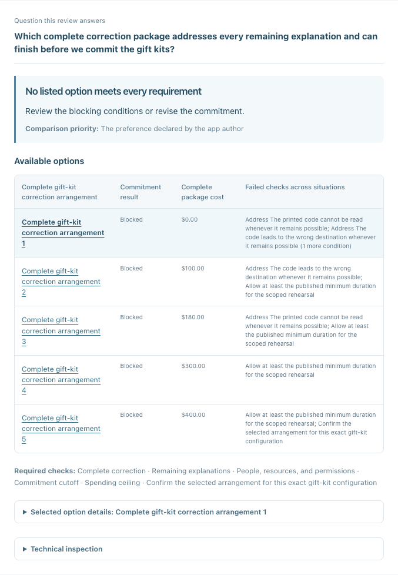
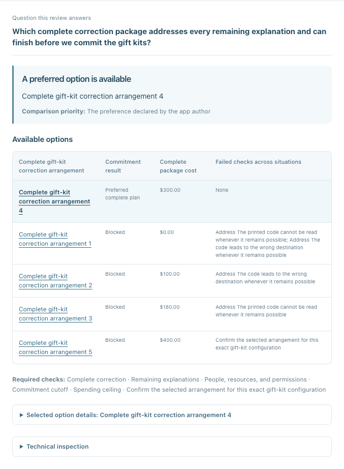
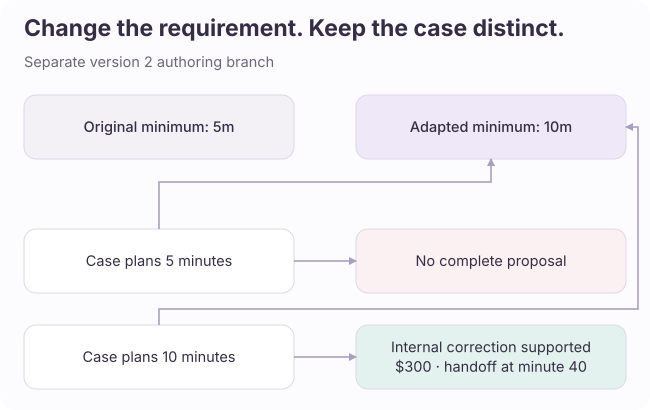
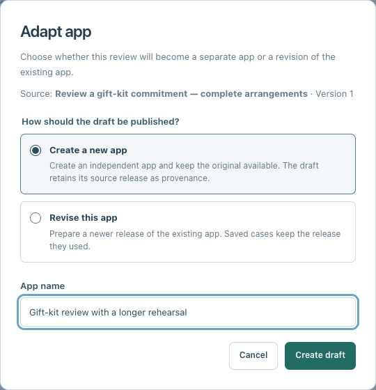
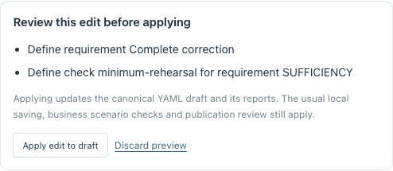
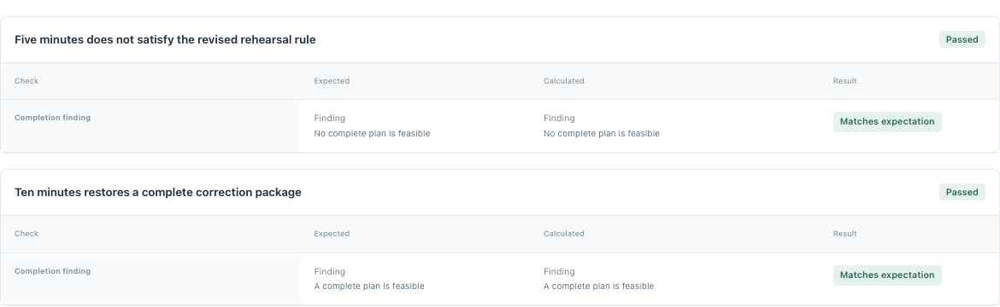
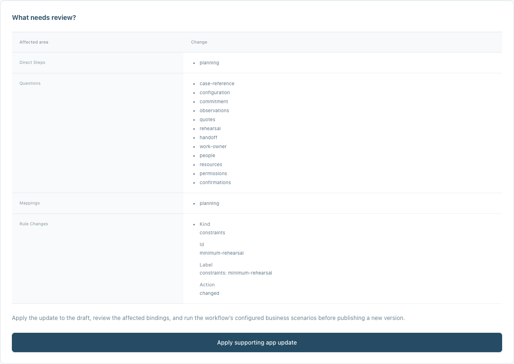
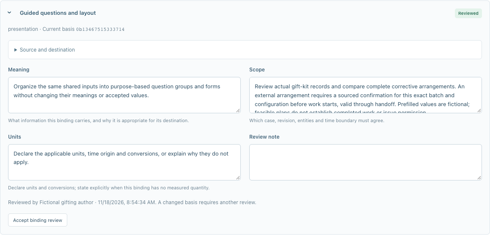
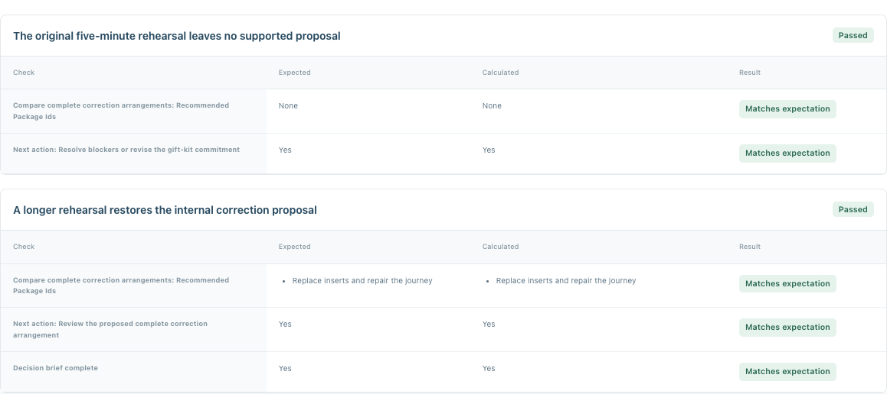
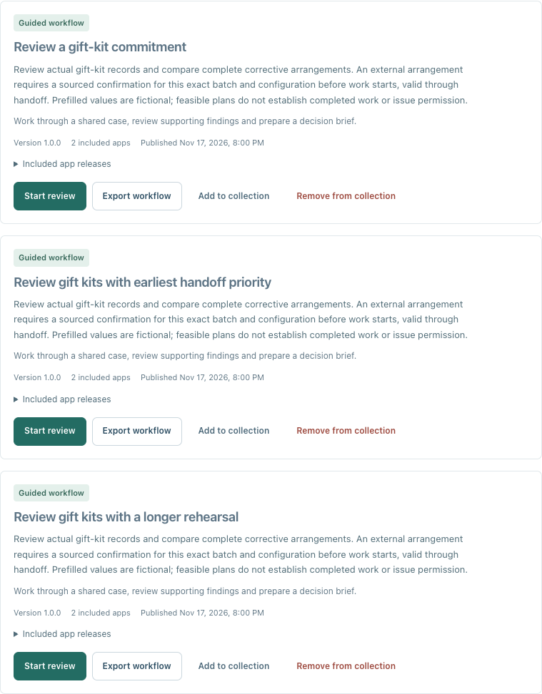

Leah is accountable for handing over 120 gift kits that recipients can actually use. Her team has a supported correction: internal replacement and journey repair costs $300 and reaches handoff at minute 35. That plan includes 25 minutes of correction, five minutes of fresh rehearsal and five minutes of handoff.
Production now wants at least ten minutes of fresh rehearsal before handoff. Finance still expects the expense to stay within $600, and marketing still needs the kits within the one-day window, ending at minute 1,440. Leah needs a proposal that reflects that stronger requirement, rather than a calculation that still permits five minutes.
The app author must decide how to make the policy part of the review. Changing Leah’s current answer to ten minutes would address this case, but future cases could still supply five under the existing rule. Changing the rule also needs care: the workflow must use the intended release, and earlier cases must retain their original basis.
Leah’s main business story follows the evidence into complete corrections and explains when the deadline justifies external work. This tutorial changes the reusable rehearsal rule in a separate release.
This authoring exercise branches from the retained version 2 teaching release in the retained gift-kit teaching walkthrough. It adapts that cost-first review and keeps the starter’s missing external confirmation. The expected corrected proposal remains internal work.
The steps and results below retain that earlier review’s exact release. The later CLI and SDK operating stories use a separately authored version 3 profile that plans ten minutes under a five-minute minimum. This exercise instead makes ten minutes mandatory. Following it does not replace the operating app or silently move an existing case onto new rules; the series guide distinguishes the paths.
The archived walkthrough retains the prepared one-day example and the authoring controls used for that branch. Sources and scope explain the adaptation and capture basis.
The stronger rule needs to change the finding.
Shared basis. The same separately adapted app and workflow require at least ten minutes of fresh rehearsal. The original 120-kit, minute-1,440 promise, $600 limit, observations, quotes and missing external confirmation remain fixed. This authoring release is separate from the v3 operating profile.
What changes. Only the planned fresh-rehearsal answer changes: five minutes versus ten. Both views already use the stronger mandatory minimum.
Five minutes supplied
No complete correction meets the new rule.
- Mandatory minimum
- 10 minutes in the adapted app
- Case answer
- 5 minutes of planned rehearsal
- Business response
- Revise the proposal; the shortfall stays visible


Leah cannot put forward this case as satisfying production’s new policy. Publishing a stronger requirement must not silently change her answer.
Ten minutes supplied
$300 in-house correction is supported.
- Mandatory minimum
- The same 10-minute requirement
- Case answer
- 10 minutes of planned rehearsal
- Calculated handoff
- Minute 40: 25 correction + 10 rehearsal + 5 handoff


Leah can put forward the complete in-house sequence under the new rule. Finance sees the same $300 expense; marketing sees that the longer planned check still fits the one-day window.
What this means for the decision. The author changes a reusable requirement in a deliberate new release. Leah supplies a case that meets it. The review exposes the consequence of each input; an actual passed rehearsal still needs its own operating record.
First the author changes the mandatory minimum from five to ten in a separate app and workflow release. The two views above then hold that new release fixed and change only Leah’s planned rehearsal input. A policy change and a case-input change are separate actions; neither establishes that a real rehearsal has passed.
This is requirements engineering: distinguish what a case proposes from what every acceptable proposal must satisfy. Planning ten minutes supplies a longer case value. Requiring at least ten minutes changes the criterion used to assess every case run through the adapted review.
How should the team make ten minutes a requirement?
The team has several workable approaches. The choice depends on whether ten minutes is a plan for this campaign, a policy people enforce outside the tool, or a requirement the modeled review must apply whenever this workflow is used.
| Approach | What it provides | What the team still needs to manage |
|---|---|---|
| Plan ten minutes in Leah’s case | A valid longer rehearsal under the existing five-minute minimum; internal work reaches handoff at minute 40. | The rule is unchanged. Five minutes would still satisfy that minimum in a later case. |
| Use a checklist or operating procedure | People can enforce the ten-minute policy through a separate review. | The unchanged app still treats five minutes as sufficient for its rehearsal requirement. Reviewers must apply the additional policy and reconcile it with the calculated proposal. |
| Build another review or custom checks | A team-owned implementation can express the policy and its consequences. | Implement and verify the relevant requirements, results and connections, including how an insufficient rehearsal affects the final brief. |
| Adapt the existing app and connect a new workflow | Reuse the existing review while changing its explicit minimum and selecting the exact planning release. | Test both five- and ten-minute inputs, review the stage connections and publish the separate workflow deliberately. |
Here, production wants a reusable mandatory minimum in the review. The author chooses to adapt the existing planning app and connect its published release to a new workflow. That keeps the established kit review while making the changed requirement visible and testable. Publishing an app alone would not update the workflow Leah runs.
Ten minutes is the team’s stated policy in this fictional example. Modeling that duration does not establish that the rehearsal design is adequate or that a real rehearsal has passed.
The commitment assessment pattern still evaluates complete corrections against the recorded promise. Production is changing one admissibility condition: a five-minute plan must now fail, while a ten-minute plan can pass if its other requirements hold. The evidence assessment’s question and fault finding remain unchanged.
Write the expected change before editing.
The team is changing a minimum requirement, not claiming that ten minutes of rehearsal have already been supplied. Leah’s existing five-minute input must remain five until she changes it.


These expectations make a useful acceptance check. If editing the rule also silently changed Leah’s answer to ten, the first situation would never expose the missing time. If the workflow still used the original app, it would continue accepting five.
The scope of the change is narrow: the same kit observations, fault review, correction packages, permissions, budget, deadline and cost-first priority remain. The minimum fresh-rehearsal duration changes from 5 to 10 minutes.
The author is adapting an implementation of the same corrective commitment decision pattern: establish the faults, compare complete corrections and prepare a bounded commitment for fresh verification. The problem family is unchanged. The adapted planning app applies the stronger requirement; the workflow must deliberately connect that app to the existing evidence review and resulting brief.
Adapt the planning app included in the workflow.
In Gifting operations → Prepare a gift-kit campaign, find Review a gift-kit commitment. Expand Included app releases and choose Adapt supporting app for its planning app.
Name the new app Gift-kit review with a longer rehearsal and choose Create draft. This gives the author an independent app to change while preserving the original release and its saved cases.


The distinction matters because the guided review combines several apps. The evidence app interprets the scoped observations. The planning app checks complete corrections. The decision brief uses their results. This requirement belongs in planning, so the author adapts that supporting app.
Preview the ten-minute requirement.
- Open Requirements & inputs → Guided commitment rules.
- In Edit commitment requirement, choose Complete correction, then select its existing minimum-rehearsal requirement check.
- Change Comparison right fixed value from 5 to 10.
- Choose Preview requirement edit. Inspect the before-and-after comparison, then choose Apply edit to draft.


The guided control edits the existing requirement; it does not add a competing second rule or replace the whole model. Previewing lets the author inspect the change before applying it to the draft.
Keep the worked example’s rehearsal answer at five minutes. A rule says what must be true. A case answer says what the team currently supplies. Keeping them separate is what allows the review to expose the shortfall.
Test the planning change against both situations.
Open Business scenarios. The supplied planning scenario file records the two independent expectations shown below: five minutes gives no feasible plan; ten minutes restores a complete correction.
Start the business scenarios, load the scenario content in the editor and choose Run business scenarios. The readable results put Check, Expected, Calculated and Result together, so the author can inspect what passed.


Both situations must pass against the current draft. A successful ten-minute example alone would miss the most important regression: whether five minutes is now rejected. If the rule or suite changes again, rerun the checks.
These tests check the planning app. They do not yet show that the workflow calls that app or carries its result into a useful brief.
Publish the adapted app into the same collection.
Choose Publish app, review the whole commitment and complete the acknowledgement, then choose Publish reviewed commitment app. In Choose a collection, select Gifting operations and Prepare a gift-kit campaign, then Add to collection.
The collection now contains an additional published app. The original workflow still identifies the original planning release. That deliberate separation protects existing cases from silently switching rules.
Connect the new release deliberately.
Open Workspaces → Create workflow. Under Installed workflow to adapt, select the prepared one-day Review a gift-kit commitment · version 1.0.0 and choose Start from installed workflow.
Give the draft its own identity and the title Review gift kits with a longer rehearsal. This is a new workflow; it does not overwrite the source review.
- Open Supporting apps and find planning, the workflow’s name for its planning dependency.
- Choose Replace app release and select the newly published longer-rehearsal app.
- Choose Preview supporting app update. Inspect the rule difference and the downstream connections affected by the replacement.
- Choose Apply supporting app update once the preview matches the intended change.


The evidence app stays on its existing release. The workflow’s planning reference changes to the exact adapted app. This keeps the requirement change visible instead of relying on a collection name or a broadly described “latest” version.
Review the connections between stages.
In Handoffs & completion, review the affected connections and their Meaning, Scope and Units. Enter a reviewer name and choose Accept binding review for each renewed review.


A binding is a connection that supplies an app input or brief from a shared case answer or an accepted stage result. The author checks that it still carries the intended business information, describes the same kit configuration and uses compatible units after the app replacement.
What may the next step rely on? This is the practical question behind computational hermeneutics. The unchanged evidence app’s finding must still describe the exact kit configuration; the adapted planning app must receive those established faults and apply its ten-minute minimum. The workflow brief can then use planning’s actual outcome. A supported schedule does not establish completed correction or a passed rehearsal. Recording the binding review is an authoring action; it does not approve Leah’s live correction work.
Test the whole workflow before handing it over.
Open Preview & publish → Workflow business scenarios. Upload the supplied workflow scenarios and choose Run workflow scenarios.
The two situations now check the connected outcome: with five minutes, the workflow produces no supported correction and calls for a revised commitment; with ten, it proposes internal replacement and repair and produces the corresponding brief.


Inspect each situation’s expected and calculated results. Missing results, differences or a warning that a rerun is needed must be resolved before relying on the check. An app scenario passing is not a substitute for testing these connected stages.
Once the current workflow checks and required reviews pass, choose Publish locally and add the workflow to the same collection and use case. This makes a separate review available in this browser. A shared Marketplace release is a separate publication.


Let Leah see the consequence of the stronger rule.
In this archived reviewed-mode exercise, open Review gift kits with a longer rehearsal with the captured Try worked example control. Its Decision brief opens first. Follow Next review step to the required task, then review and accept the supplied context and observations and the evidence result. These are this retained definition's review steps; they are absent from the current calculation workflow. The navigation control opens work to review; it does not accept an answer or assess the case for Leah.
The workflow keeps input and report navigation separate. In Inputs → Forms → Correction arrangements → Quotes and work, leave the recorded fresh rehearsal at five minutes for the first assessment. In Reports → Review findings → Coordinate supporting assessments, evaluate planning and read its concise decision before accepting the result. The new review cannot propose a complete correction: the input does not meet the stronger rule. That is the intended finding, even though five minutes worked in the original review.
The five-minute view at the beginning shows this blocked planning result under the adapted minimum.
Leah returns to the same input section, records ten minutes for the fresh rehearsal, accepts the changed answer in the assigned role and reassesses planning. Changing an input tab preserves the report selection; an unfinished form edit still leaves the displayed findings on their earlier basis. The accepted evidence can remain unchanged because the kit observations and scope have not changed.
The internal correction is now preferred at $300, with handoff at minute 40: 25 minutes of correction, ten of fresh rehearsal and five of handoff. The extra five minutes fit comfortably within the one-day window. The external package remains unavailable without its required confirmation.
The ten-minute view at the beginning shows the restored planning result under that same adapted release.
Return to decision brief brings Leah back to the authored business proposal and any outstanding required review. Read the focused answer first, compare the available arrangements, then expand supporting findings when a requirement needs explanation. Inspecting a row changes only the presentation; it does not supply a longer rehearsal answer, accept the assessment or authorize work. In an assessment, Selected option details opens the arrangement’s requirements; Work and timing inspects its schedule, and Technical inspection → Inspect complete report retains the complete calculation. The concise screen changes presentation, rather than the minimum or the case answer.
The retained navigation verification reopens the exact five- and ten-minute reviewed cases without changing their workflow definitions or saved findings. The stronger minimum remains a deliberately separate release; a clearer display does not migrate earlier cases to a different policy.
A stronger requirement the team can see in the result.
Leah can now explain the consequence of production’s policy. In the new workflow, a five-minute rehearsal supplies no complete correction proposal. With ten minutes recorded, internal work remains preferred at $300, with handoff at minute 40. Finance can see that the correction price is unchanged; marketing can see the extra five minutes of planned work within the next-day deadline.
The author has changed the requirement, tested both outcomes and connected the exact adapted planning release to a separately published workflow. Production’s minimum now affects the proposal and brief in that review. The original cost-first review and its saved cases still use their original planning release; selecting that earlier review still selects its earlier policy.
The new brief gives Leah and the responsible people a plan to review and carry out. It does not establish that the fresh rehearsal has passed or authorize release of the kits. The adapted app, workflow and case make the policy change explicit while preserving the basis of earlier decisions.
For a closer review, the retained adapted planning model, dependency preview and compressed workflow scenario results preserve the authored change and its verification.
The operating continuation applies the same discipline to a broader change: publish a separate, tested app and workflow for the intended business policy. Its version 3 cost-first profile prefers $300 internal work with ample time; the $400 external package becomes necessary when the internal sequence would miss the original cutoff. It keeps a five-minute published minimum and plans ten minutes of rehearsal. It does not inherit or replace the ten-minute mandatory minimum authored in this walkthrough.
Next: see the CLI identify which campaigns still have a supported response and who needs to act, then follow one continuing review in the SDK desk through selection, actual correction, a fresh rehearsal and handoff records. The new workflow preserves the original quantity and cutoff separately from revised proposals. Accepting a finding does not authorize spending, and recording a plan does not establish that the kits were corrected or delivered.